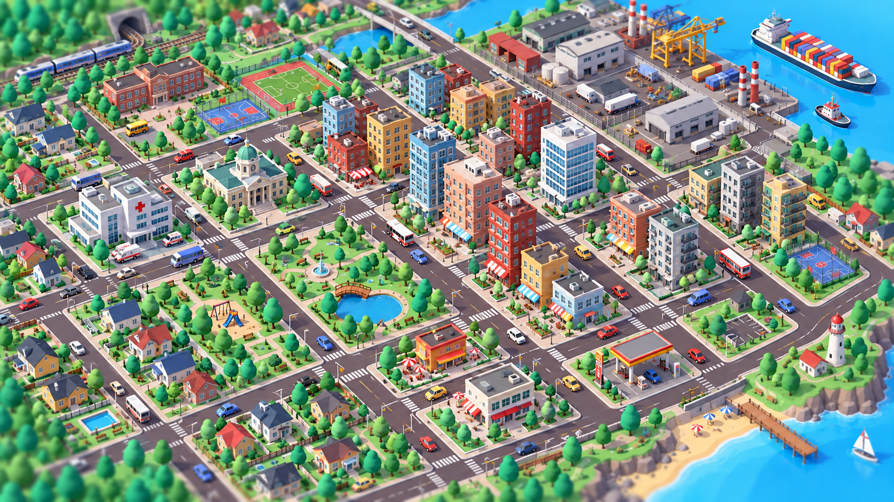
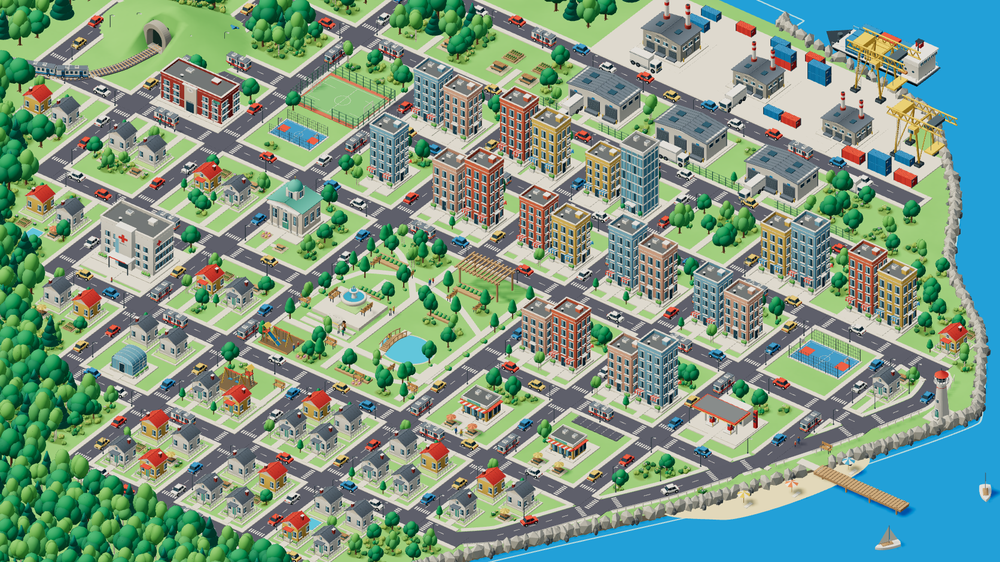

<!doctype html>
<html lang="pt-BR"><meta charset="utf-8"><meta name="viewport" content="width=device-width,initial-scale=1"><title>EcoQuest — comparação do mapa</title>
<style>
*{box-sizing:border-box}body{margin:0;background:#102720;color:#eaf1e8;font:15px system-ui}header{padding:22px 28px;display:flex;align-items:center;justify-content:space-between;gap:20px;flex-wrap:wrap}h1{font-size:23px;margin:0 0 5px}p{margin:0;color:#b7cabc}button{font:inherit;color:inherit;background:#254737;border:1px solid #668872;border-radius:7px;padding:9px 14px;cursor:pointer}button[aria-pressed=true]{background:#dcebad;color:#173326}label{display:flex;align-items:center;gap:10px}main{padding:0 20px 24px}.pair{display:grid;grid-template-columns:1fr 1fr;gap:14px}figure{margin:0}figcaption{padding:8px 0;font-weight:600}img{display:block;width:100%;height:auto}.overlay{display:none;position:relative;max-width:1672px;margin:auto}.overlay .current{position:absolute;inset:0}body.blend .pair{display:none}body.blend .overlay{display:block}.controls{display:flex;gap:12px;align-items:center;flex-wrap:wrap}input{accent-color:#dcebad}footer{padding:0 28px 22px;color:#adc5b5;max-width:960px}@media(max-width:700px){.pair{grid-template-columns:1fr}header{padding:16px}main{padding:0 8px 12px}}
</style>
<header><div><h1>Composição da cidade</h1><p>Mesma proporção de imagem: 1672 × 941.</p></div><div class="controls"><button id="pair" aria-pressed="true">Lado a lado</button><button id="blend" aria-pressed="false">Sobrepor</button><label>Mapa atual <input id="opacity" type="range" min="0" max="100" value="50" aria-label="Opacidade do mapa atual"></label></div></header>
<main><div class="pair"><figure><figcaption>Referência enviada</figcaption></figure><figure><figcaption>Mapa atual no jogo</figcaption></figure></div><div class="overlay"></div></main>
<footer>A imagem do jogo foi capturada com a interface oculta. Os controles de exploração e as missões continuam disponíveis no jogo. Esta comparação mostra o estado da implementação e permite avaliar o que ainda difere da referência.</footer>
<script>const pair=document.querySelector('#pair'),blend=document.querySelector('#blend');pair.onclick=()=>{document.body.classList.remove('blend');pair.setAttribute('aria-pressed','true');blend.setAttribute('aria-pressed','false')};blend.onclick=()=>{document.body.classList.add('blend');pair.setAttribute('aria-pressed','false');blend.setAttribute('aria-pressed','true')};document.querySelector('#opacity').oninput=e=>{document.querySelector('.current').style.opacity=e.target.value/100;blend.click()};</script></html>
